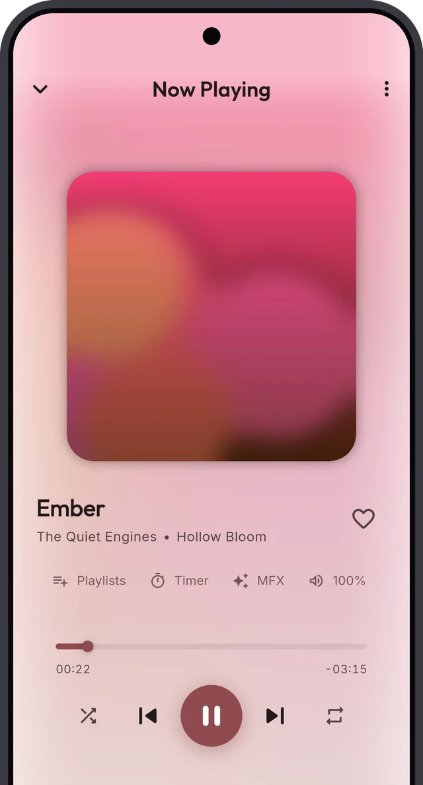
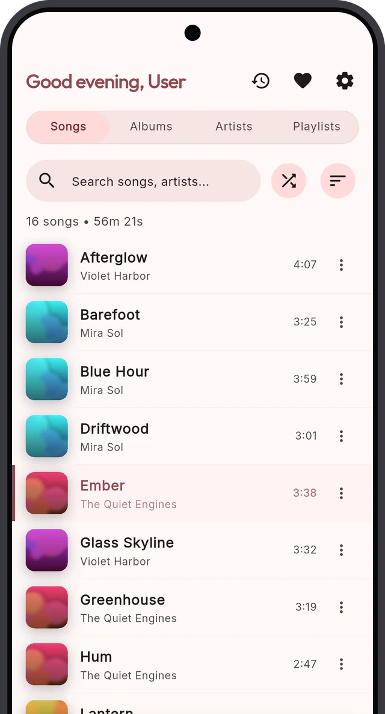
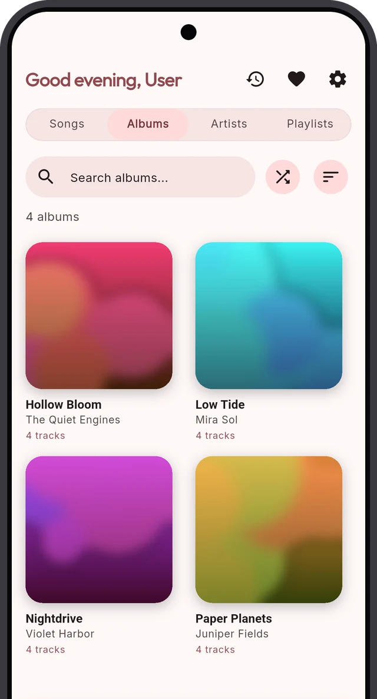
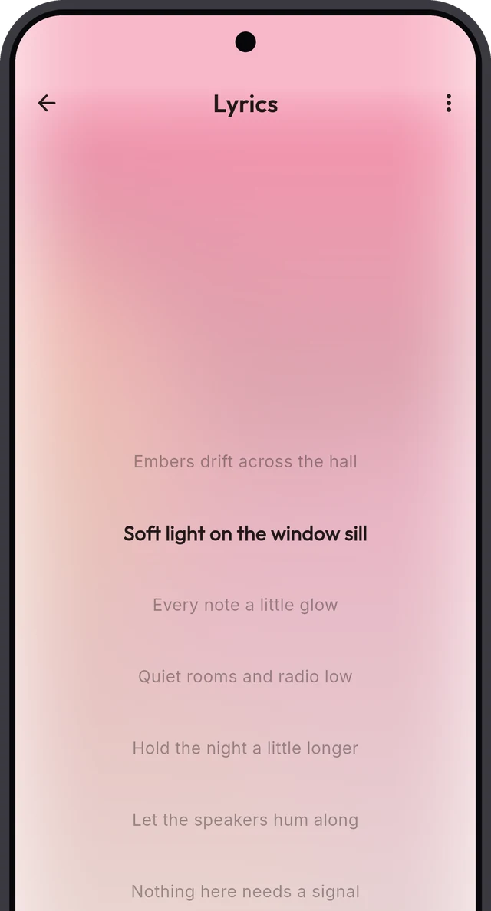
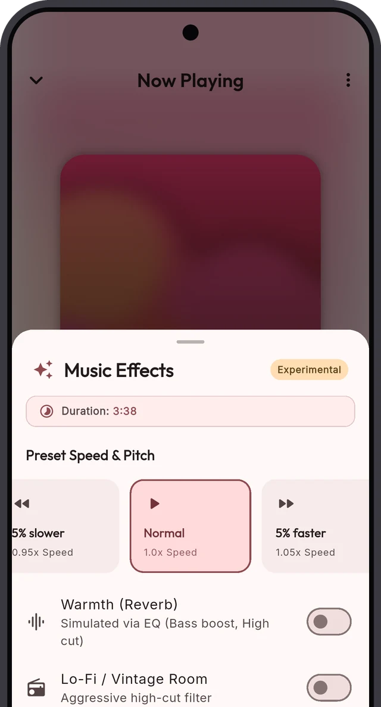
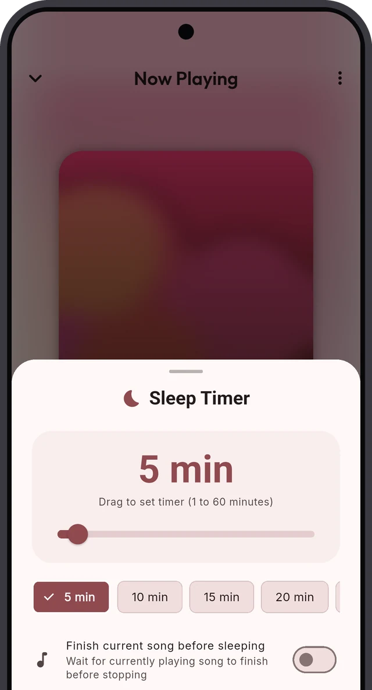

Free · Open source · Android and iOS
Your music. Your phone. No internet needed.
Sonora plays the music you already own, straight from a folder on your phone. No account, no streaming, no subscription.

See it
Your library, front and centre.
Every song, one list
Search, sort and shuffle your whole library.

Browse by cover art
Albums, artists and playlists, a swipe apart.

Colours that follow the cover
The player takes its colours from the album art.
Demo library with made-up artists, for illustration.
What it does
A music player that just plays your music.
Plays your own files
Point Sonora at a folder. Your files stay where they are. Nothing is copied or uploaded.
Works offline
No account and no data connection needed. Your library is always there.
Made for everyday listening
Albums, artists, playlists, lyrics and search, all one tap away.
How it works
Three steps. Then music.
Install the app
Download the APK from GitHub and open it on your phone. Need help?
Pick your music folder
Sonora scans it once and keeps your library up to date.
Press play
Listen at home, on the train or on a flight. No signal required.
Made for listening
Everything you expect. Nothing you don't.
Lyrics
Sing along, line by line.
Drop a .lrc file next to a song and Sonora shows the words in time with the music. Tap a line to jump to it. Plain .txt lyrics work too.
- Synced lyrics scroll on their own
- Found automatically when you sync
- Works offline, like everything else

Sound
Make it sound like you want.
A multi-band equalizer, quick presets, and speed and pitch controls. Warm it up, add bass, or slow a song down to learn it.
- Presets: Warmth, Lo-Fi, Bass Boost
- Speed from 0.70x to 1.50x
- A Bluetooth setting for headphones and speakers

Sleep timer
Fall asleep to your music.
Pick a time from 1 to 60 minutes. Sonora fades the music out and stops by itself. Or let the current song finish first.
- Presets or a custom time
- Finish the current song first
- Add or cancel time from the notification

Your colours
Light, dark or pure black. Colours follow your wallpaper or the album art.
Listening statistics
Top songs, albums and artists, and your total listening time. Stats stay on your phone.
Plays in the background
Controls in the notification and on the lock screen. Music keeps going when you leave the app.
Where it runs
Phone first. iPhone, car and desktop too.
Android phone
Android 7.0 or newer. This is where Sonora is at home.
iPhone
Works on iOS 15 or newer. Not on the App Store: you install the IPA with a sideloading tool. How to install
Car and desktop
Android Auto in the car. Windows builds are supported too: get the source on GitHub.
Your files stay on your phone. Sonora never copies or uploads them.
Your library, ready to play.
Free and open source. Available for Android and iOS.